출발 전
무릎으로 누르다 지퍼가 터질 뻔한 순간
겨울 니트 두 벌, 외투 하나 넣었을 뿐인데 불룩 솟아오른 짐. 억지로 지퍼를 당기다 캐리어 레일이 뜯어질까 조마조마했던 답답함.
겨울여행 짐을 덜 부풀게 담는 방법
이 포스팅은 쿠팡 파트너스 활동의 일환으로, 이에 따른 일정액의 수수료를 제공받습니다.
두꺼운 니트와 패딩 몇 벌에, 캐리어 뚜껑을 또 온몸으로 누르고 계셨나요?
청소기나 펌프 없이, 옷을 넣고 압축 지퍼를 돌려 닫는 방식. 공기층이 많은 니트와 패딩을 가방 안에 더 낮고 단정하게 정리해 줍니다.
※ 공기층이 풍부한 니트·패딩·경량 아우터에 특히 효과적입니다.
겨울 니트·패딩 짐 싸기 스트레스, 내일 도착하는 로켓배송으로 해결하세요.
쿠팡에서 최저가 & 옵션 확인하기이 포스팅은 쿠팡 파트너스 활동의 일환으로, 이에 따른 일정액의 수수료를 제공받습니다.
※ 쿠팡 무료 배송·반품 조건 및 옵션별 실시간 가격을 바로 확인할 수 있습니다.
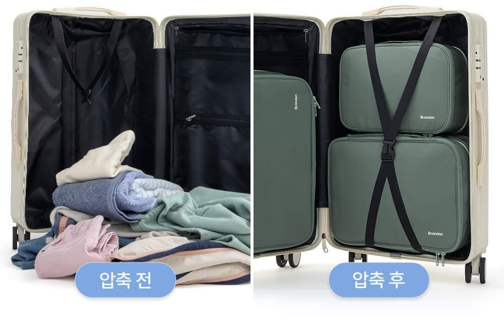
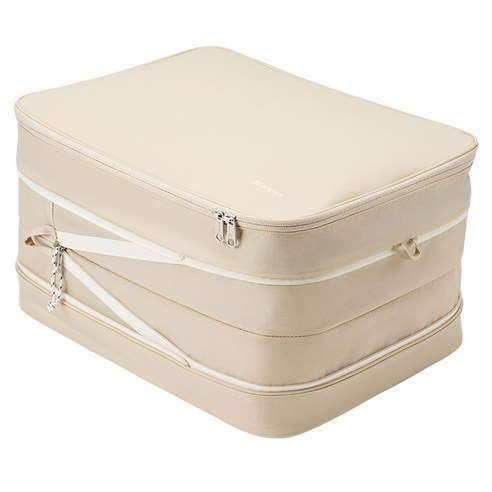
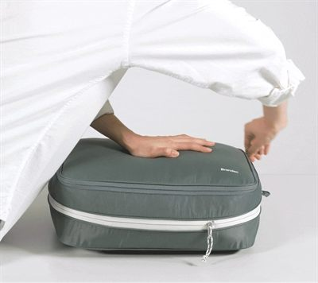
브랜든 2세대 여행용 부피순삭 압축 파우치
210D 립스탑 나일론 + 정품 YKK 지퍼 + 생활 발수 코팅
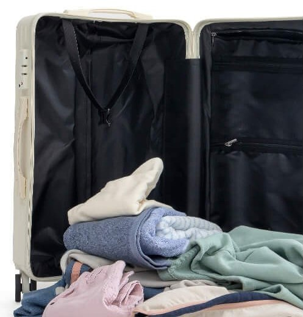
TRAVEL PAIN POINT
여행 전날 밤, 닫히지 않는 캐리어 뚜껑 위에 무릎을 꿇고 앉아 땀을 뻘뻘 흘렸던 경험, 한 번쯤 있으시죠?
출발 전
겨울 니트 두 벌, 외투 하나 넣었을 뿐인데 불룩 솟아오른 짐. 억지로 지퍼를 당기다 캐리어 레일이 뜯어질까 조마조마했던 답답함.
여행지에서
집에서는 청소기로 바짝 줄였는데, 돌아오는 호텔 방엔 청소기가 없습니다. 손으로 말아도 금세 공기가 차오르고 찢어지는 일회용 비닐팩의 배신.
귀국길
입었던 빨랫감은 부풀어 오르고, 현지에서 산 과자와 선물은 들어갈 틈이 없어 결국 공항에서 쇼핑백을 주렁주렁 들고 다녀야 했던 피로감.
THE SIMPLE SOLUTION
공기층을 머금은 겨울 니트와 패딩을 차곡차곡 넣고 외곽 지퍼를 한 바퀴 돌려주세요. 물리적 이중 압축 구조가 옷감 사이의 불필요한 공기를 빠져나가게 만들어 가방 속 공간을 확보해 줍니다.
파우치에 의류를 평평하게 80~90% 채웁니다.
상단 메인 지퍼를 닫아 내용물이 튀어나오지 않게 밀봉합니다.
손으로 중앙을 가볍게 누르며 외곽 360도 압축 지퍼를 돌려 잠급니다.
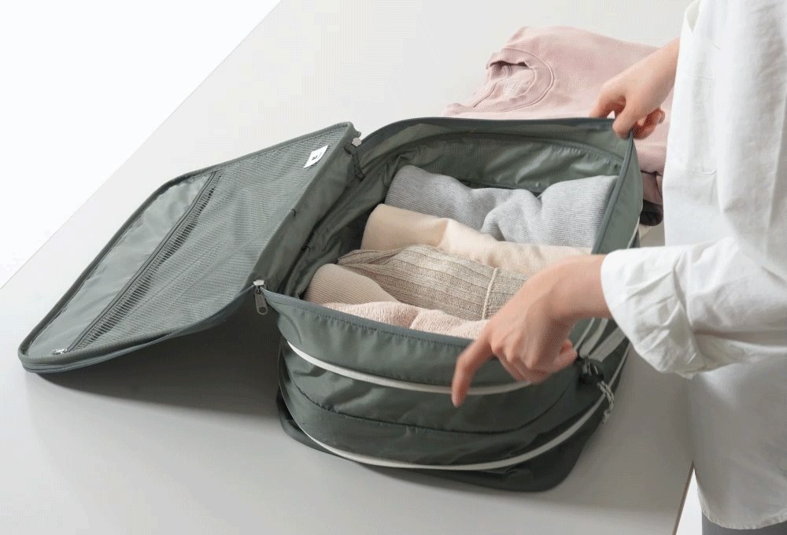
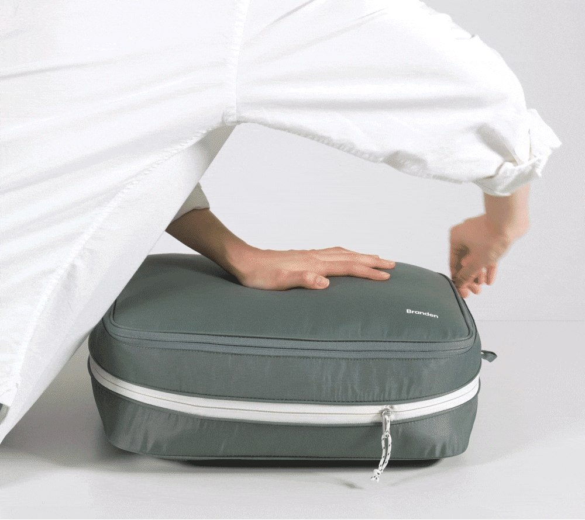
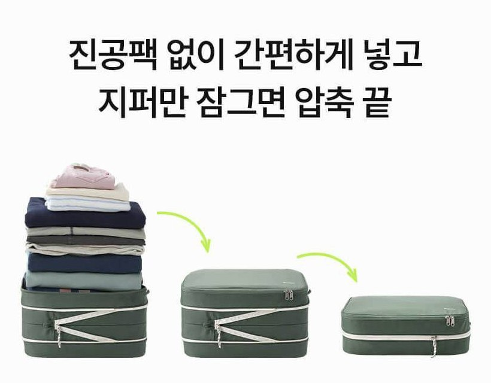
불룩했던 캐리어 한 칸이 반듯한 블록 형태로 정리되어 쇼핑 기념품 자리가 생깁니다.
압축 후 단단하게 각이 잡혀, 이동 중 가방을 굴려도 내부 짐이 쏟아지거나 쏠리지 않습니다.
2세대 M사이즈는 양면 2실 구조로 새 옷과 입은 세탁물을 한 파우치에서 위생적으로 나눕니다.
PROVEN QUALITY
낙하산이나 고기능성 텐트에 쓰이는 격자 직조 립스탑 원단을 사용했습니다. 겉감(210D 나일론), 무너짐 방지 완충 내장재(폴리에틸렌 폼), 안감(폴리에스터)의 3중 구조로 강한 압축 장력에도 찢어짐 없이 팽팽하게 버텨줍니다.
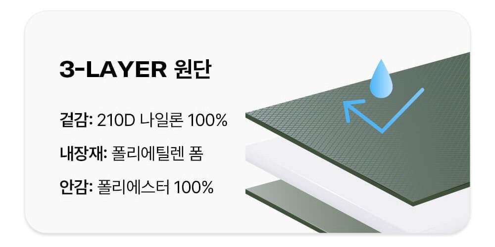
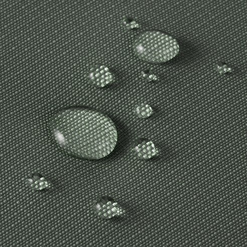
생활 발수 코팅으로 물방울이 원단에 바로 스며들지 않습니다. 완전 방수는 아닙니다.
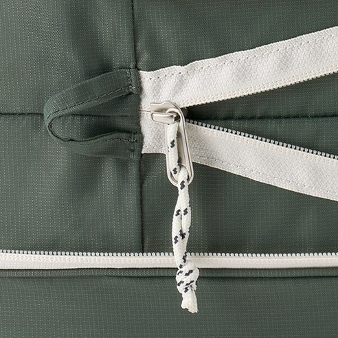
압축 파우치의 생명은 지퍼입니다. 세계적으로 검증된 고강도 YKK 지퍼를 장착하여 레일 벌어짐을 방지하고, 지퍼 안쪽에 보호 천을 덧대어 닫을 때 얇은 옷감이 씹히는 현상을 막아줍니다.
기내용 캐리어(20인치: S+S+M 구성)부터 대형 수화물(24인치: S+S+M+L 구성, 28인치: S+S+M+M+L 구성)까지 테트리스 블록처럼 반듯하게 맞아떨어집니다.
압축 전 높이 18.5cm 압축 후 9.5cm
양말, 속옷, 얇은 상의
압축 전 높이 22.5cm 압축 후 13.5cm
셔츠, 니트, 하의 양면 분리 수납
압축 전 높이 23.5cm 압축 후 13.5cm
겨울 외투, 패딩, 두꺼운 스웨터
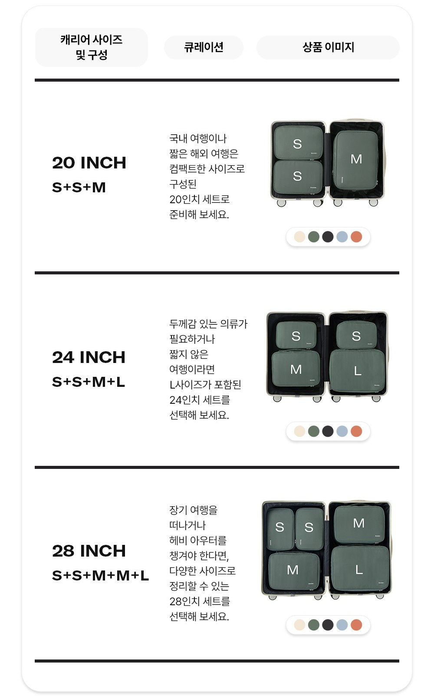
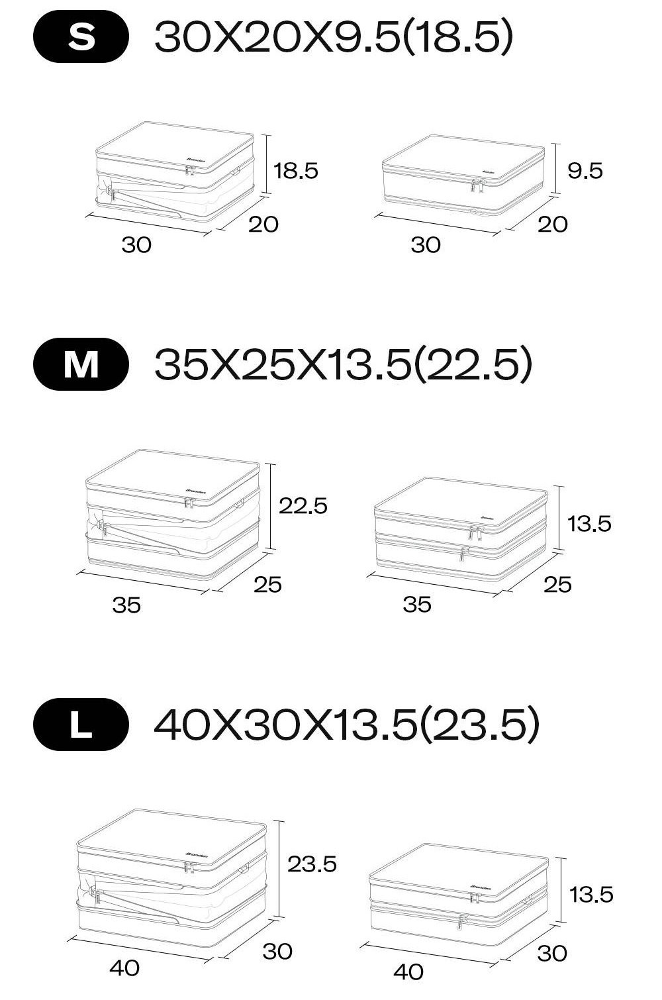
“유럽 2주 여행 때 겨울 니트 6벌을 넣고 지퍼 잠그니 캐리어 반쪽이 텅 비었습니다.”
“저가형 쓰다 지퍼 터져서 버렸는데, 브랜든은 3년째 멀쩡하게 해외 출장 다닙니다.”
“압축 후 단단하게 각이 잡혀서 캐리어 안에서 짐이 쏠리지 않는 게 최고 장점이에요.”
권장하지 않습니다. 생활 발수 코팅과 내부 완충 폼, 지퍼 레일의 수명을 위해 세탁기·건조기 사용 및 고열 다림질은 피해 주세요.
오염이 묻었을 때는 마른 천이나 물티슈에 중성세제를 살짝 묻혀 가볍게 닦아내 주시고, 심한 오염일 경우에만 찬물에 가볍게 단독 손세탁한 뒤 그늘에서 자연 건조해 주시면 오래 사용하실 수 있습니다.
네, S와 M 사이즈 조합으로 완벽하게 들어맞습니다.
20인치 기내용 캐리어에는 S 2개 + M 1개 구성이 알맞게 수납됩니다. 다만, XL 사이즈 이상의 대형 파우치는 20인치 캐리어에 들어가지 않으므로 패딩이나 두꺼운 짐을 담으실 때는 본인의 캐리어 인치 규격(24인치 이상 권장)을 꼭 확인해 주세요.
부피(두께)는 확실히 줄어들지만, 의류 자체의 무게는 줄어들지 않습니다.
따라서 저비용항공사(LCC) 이용 시 수화물 무게 제한(보통 15kg)을 넘기지 않도록 유의해 주세요.
또한 패딩·니트·플리스처럼 공기층이 많은 의류는 드라마틱하게 줄어들지만, 청바지나 가죽처럼 조직이 치밀한 의류는 부피 감소 체감이 적을 수 있습니다. 정장 셔츠나 실크는 강한 압축 시 구김이 생길 수 있으니 가볍게 수납하시는 것을 추천합니다.
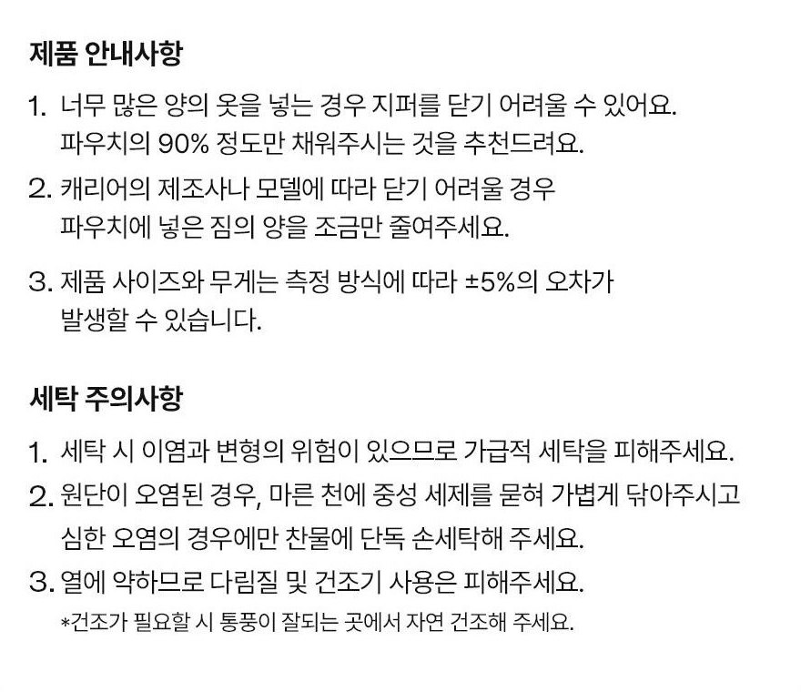
이 포스팅은 쿠팡 파트너스 활동의 일환으로, 이에 따른 일정액의 수수료를 제공받습니다.
※ 인기 색상(라이트 베이지, 소프트 카키)은 시즌별로 조기 품절될 수 있습니다. 실시간 재고를 쿠팡에서 먼저 확인해보세요.
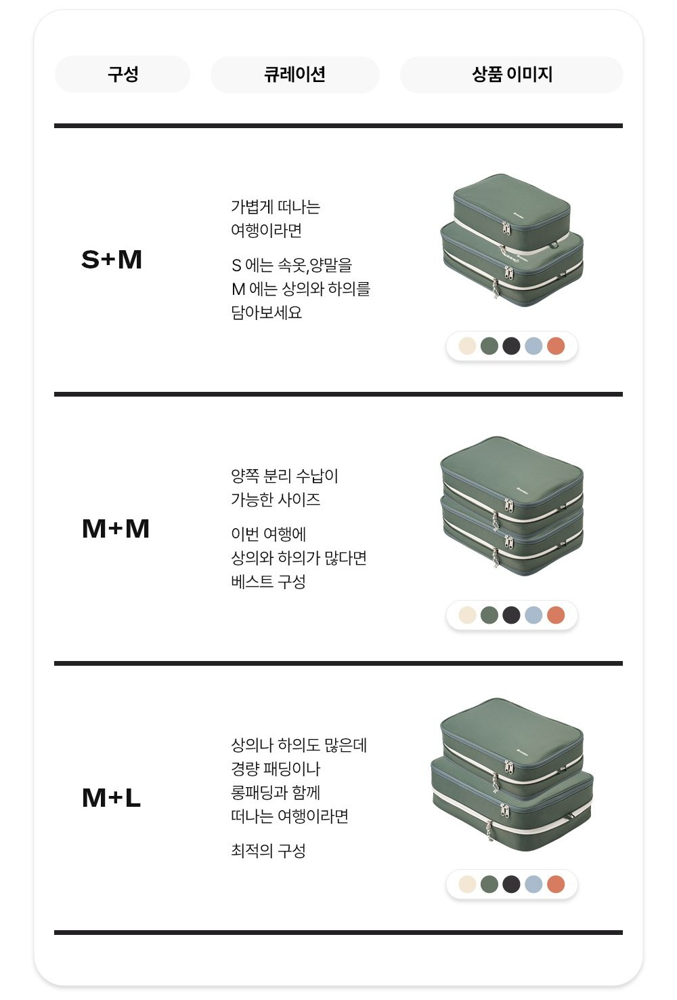